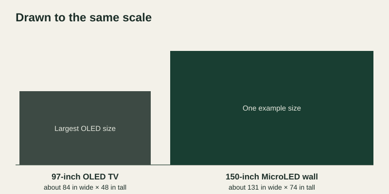

OLED and MicroLED both light every pixel on its own, so both give you deep blacks and rich contrast. What usually decides a large home theater is size. The biggest OLED TVs sold today measure 97 inches. A MicroLED wall is built from cabinets, so it can be made to the size and shape your room calls for. A 97-inch screen that fills your view from the seats makes OLED an excellent choice. A bigger picture, a cinema-wide shape or a room that stays bright points to MicroLED.
MicroLED and OLED side by side
| OLED TV | MicroLED wall | |
|---|---|---|
| Largest size | Up to 97 inches | Built to the room, well past 100 inches |
| Picture shape | Standard 16:9 | 16:9 or a cinema-wide shape |
| Blacks and contrast | Excellent: pixels switch fully off | Excellent: pixels switch fully off |
| Bright rooms | Dims as more of the screen turns bright | Higher full-screen brightness with a BlackFire anti-glare surface |
| Artwork and static images | Built-in protections dim images left on screen | Suited to artwork and long static scenes |
| If a part fails | Repair or replace the TV | Swap the affected module from the front |
| Installation | Hangs on the wall like any TV | Planned into the room and installed by an authorized dealer |
| Best fit | Media rooms where 97 inches is big enough | Dedicated theaters and rooms that need a bigger image |
Where OLED is the right call
OLED is a superb display for a media room or a smaller theater. It is slim, it mounts like any television and its picture in a dark room is stunning. Sit close enough that 97 inches feels big, and you may not need anything more.
Where MicroLED pulls ahead

A picture that fills the room. With two rows of seats, the back row often sits far enough away that even 97 inches looks small. A MicroLED wall can be sized so the image fills the view from every seat. Our guide to seating and viewing distance shows how to work out the right width.
A true cinema shape. Many films are shot wider than a TV screen, which leaves black bars above and below the picture. A MicroLED wall built in a cinema-wide shape shows those films edge to edge. See our guide to custom aspect ratios for the options.
Rooms with daylight. OLED panels lower their brightness as more of the screen turns bright, a power limit that TFTCentral explains in detail. That rarely matters in a dark theater. In a room with windows, a MicroLED wall keeps the full picture bright, and our BlackFire surface absorbs room light to cut down reflections.
Art between movies. Many owners leave artwork or a menu on screen for hours. OLED TVs protect themselves by dimming images that stay put. MicroLED uses inorganic LEDs that suit long static scenes, so the wall can display art when the theater is not in use.
Ownership over many years. A MicroLED wall is made of modules that come off the front, so fixing a fault means swapping one piece of the wall. Our MicroLED maintenance guide covers how that works.
How to choose for your room
Three questions settle most decisions. How far from the screen are the main seats? How much daylight reaches the room? What will you watch most: films, sports, games or art?
An authorized dealer turns those answers into a plan. That plan sets the image width and shape, the pixel pitch that looks smooth from the closest seat, and how the wall, sources and sound come together in the room. Our guide to choosing a home theater wall goes deeper on each step.
See the difference at full size
The clearest way to compare is to see a MicroLED wall at the size your room calls for, playing your own films and games. Bring your room drawings and seating plan to an authorized Opal dealer.
Find a Dealer for Your Theater